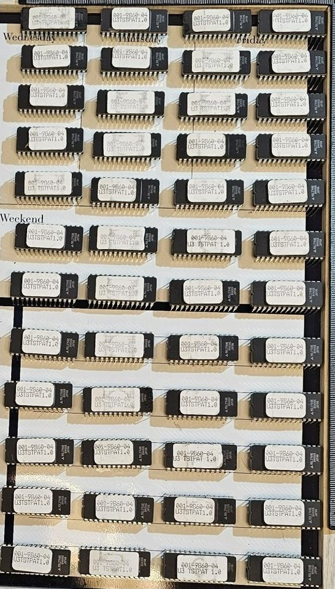
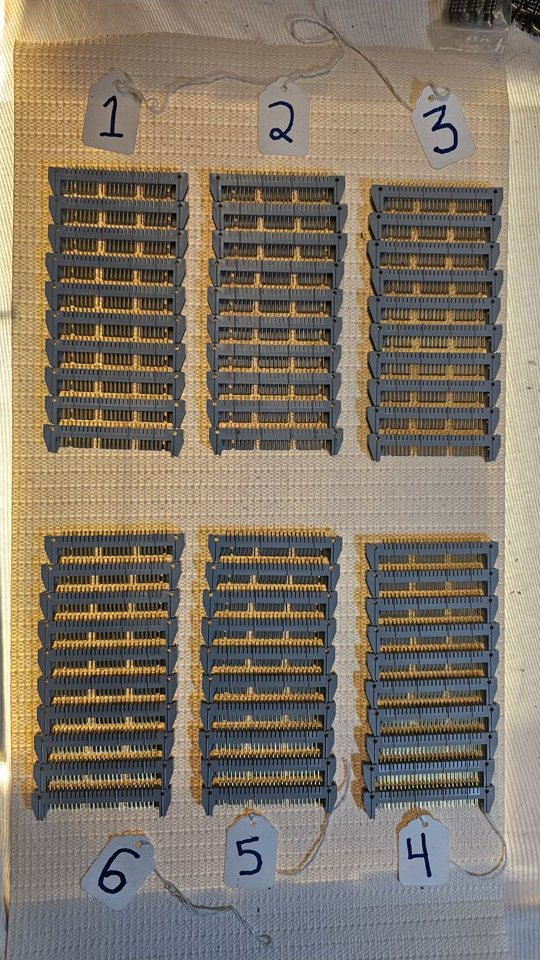

What I carry
Arcade, pinball and coin-op
TTL logic in factory rails, EPROMs and PROMs, Z80 CPUs and support chips, DRAM, card-edge and PCB connectors.
Vintage computing
Period-correct chips and parts for 8-bit and early PC restoration.
Sound and synth
Components for vintage audio gear and synthesizer repair.
Available now: arcade repair package
61 lots sold together as one package: 48 Mitsubishi M5L2764K windowed EPROMs, 97 Rockwell R8040P in rails, gold-pin Hitachi 74LS rails, a Zilog Z80 set, bulk 74-series TTL, and 318 card-edge and PCB connectors (3M, Amphenol, Sullins, ITT Cannon). Mostly new old stock.
Every lot is photographed as the actual stock you receive. Rails and small lots are hand counted; large bulk bags are careful estimates, rounded down.
See the listing on eBay

How I sell
Buyer protection
Sales run through eBay or PayPal Goods & Services, so you're covered.
Honest counts
What's in the photo is what ships. Questions or extra photos of any lot, just ask.
Wholesale welcome
Repair shops, arcades and resellers: ask about whole-lot pricing.
Contact
Jason Dinger, owner
Email: secondandfailing@gmail.com
Eastern Oregon, USA. Ships nationwide.